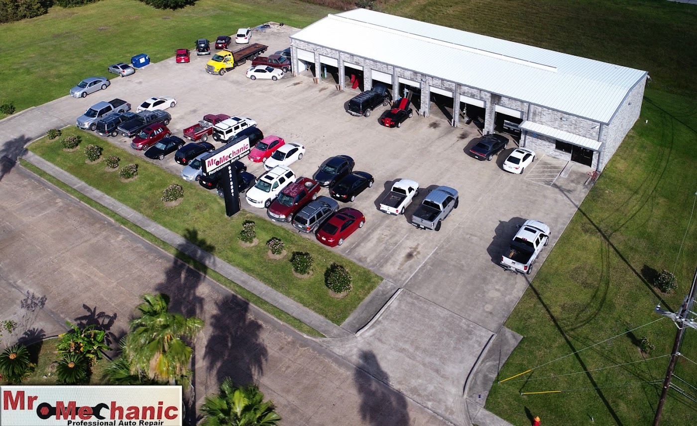
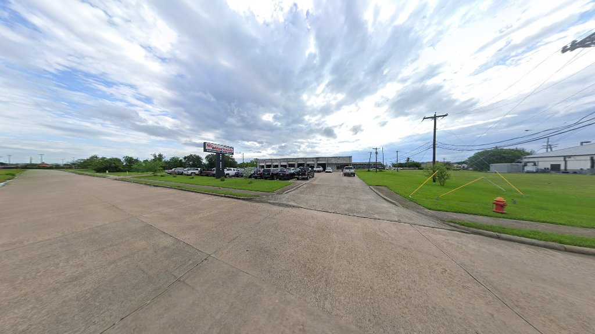
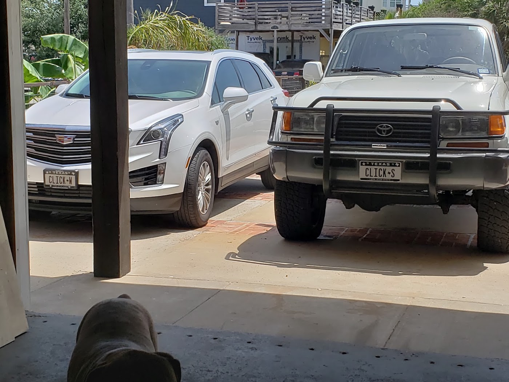

Engine Diagnostics
Check-engine light on? We read the codes, find the set criteria, and chase the actual fault — not just the code on the scanner.

Texas City, TX · Since 2002
Family-owned full-service auto repair on 31st 1/2 St N. From a check-engine light to a full transmission — we tell you what's wrong, what it costs, and what can wait.
01 / Services
One shop instead of four. If it's on your vehicle, we can look at it — and if we can't, we'll tell you honestly rather than guess on your dime.
Check-engine light on? We read the codes, find the set criteria, and chase the actual fault — not just the code on the scanner.
Pads, rotors, calipers, hardware and fluid. Squealing, grinding, or a soft pedal — bring it in. Free brake check, no strings.
Not cooling, blowing warm, or only working sometimes? We install, repair, recharge and replace A/C systems — including intermittent faults other shops skip.
Leaks, noise, timing chains, gaskets, mounts. Full engine repair and replacement with the work documented before we start.
Slipping, hard shifts, leaks or no engagement. Diagnostics, service, repair and replacement for automatic and manual.
Shocks, struts, ball joints, tie rods, bushings and wheel bearings. Ride quality restored, not just parts swapped.
Uneven tire wear, pulling, or a crooked wheel. Computerized alignment on our extended rack — trucks and 4x4s included.
Catalytic converters, mufflers, pipes and O2 sensors. Quiet, sealed and ready to pass.
Radiators, water pumps, thermostats, hoses and coolant leaks. We pressure-test to find it instead of guessing.
Battery replacement, charging-system testing, starters, alternators, power windows and wiring faults.
Oil changes, air and cabin filters, wiper blades, tune-ups and scheduled service — the small stuff that keeps the big stuff away.
Car can't make it in? We coordinate local wrecker service to get it to the shop and get you moving again.
02 / Why Mr. Mechanic
We stand behind every repair. If something isn't right, bring it back — that's the whole deal.
Parts and labor quoted before we touch the car. No upselling, no surprise lines on the invoice.
We chase the cause, not the code. Check a sensor, test the circuit, pressure-test the system — then tell you what we found.
Open since 2002. Same family, same street, and a lot of customers who've been bringing us their cars since day one.
“It's tough to find a mechanic you can trust, but the team here is honest, knowledgeable, and efficient. I will definitely be a repeat customer.”
— Art Webb · Google review
03 / Reviews
“They got me in and took care of my issue quickly and properly. The owner and mechanics were knowledgeable and solved problems in my truck and went the extra bit to fix it. Definitely will use them in the future and with total confidence.”
“Fixed my AC in a day, even ordered a new part when my hood latch broke, and got it the next morning. Honest, quick, and great people.”
“The owner is honest — he could have done my brakes as they seemed to be bad. He looked at them and told me to drive the car more often.”
“I have been taking my vehicles to Mr. Mechanic for about 20 years or so. They are honest and guarantee all of their work. I have never had one issue with any of their repairs.”
“They found the problem in 5 minutes and replaced the harmonic balancer. Everyone else wanted to replace the flywheel, etc. It runs smoother than it has in the last 8 years.”
“Great communicators. Kept me informed of faults found and the cost to repair. My go-to place for all my automotive repairs.”
“Love this place, always fair prices, very knowledgeable. I never feel like I should find a second opinion when I leave one of my vehicles here.”
“Only mechanic I trust to work on my vehicles. Owners are awesome people — I always recommend them to everyone I know.”
04 / The Shop
Real bays, real lifts, real people. Just off Palmer Hwy behind the Raceway — hard to miss once you know it's there.


05 / About
Mr. Mechanic, LLC has been fixing cars in Texas City since December 2002. Doug and his team built the shop on a simple idea: diagnose it properly, explain it plainly, and charge fairly for it.
That's why customers who came in for a single brake job in 2005 still hand us the keys today — and why a good share of our work comes from someone telling a friend.
We're a full-service facility: maintenance, alignments, tires, brakes, engine diagnostics, A/C and heating, transmission, exhaust, cooling systems and electrical. Foreign or domestic, car or truck, high-mileage or new.
Who you'll talk to
Twenty years of turning wrenches and answering the phone himself.
Runs the schedule and keeps the bays moving.
Explains the findings, works with warranty companies, and keeps you posted.
06 / Book
Tell us what's going on and we'll follow up to confirm a time. Prefer to talk? Call the shop — someone picks up.
Hours
Walk-ins welcome. Appointments get priority placement in the schedule.
Find us
Take the Texas City exit off I-45 and follow Palmer Hwy (FM 1764 E) into town — we're just behind the Raceway.
Open in Google Maps07 / FAQ
No. We take walk-ins and work by order of schedule — so get here early if you can. Appointments get priority placement, and calling ahead lets us tell you how the day is looking.
Yes. We'll inspect your brakes and show you what we find at no charge. If they're fine, we'll tell you that too — one reviewer specifically mentioned being sent home to drive the car more rather than being sold pads.
We stand behind our work. If something isn't right, bring the vehicle back and we'll make it right. That's also why we prefer proven parts over the cheapest option on the shelf.
Yes. We coordinate local wrecker service to get your vehicle to the shop. Call us and we'll set it up.
We do. Summer has handled the paperwork with warranty providers directly for customers — mention it when you call so we know up front.
We look it over, tell you what we find, and quote parts and labor before any work begins. Nothing gets done without your okay, and we'll call you if something new shows up mid-repair.
Texas City, La Marque, Dickinson, League City, Hitchcock, Galveston County and the surrounding area — right off Palmer Hwy with easy access from I-45.
Bring it by. We'll look it over and tell you the truth about it.